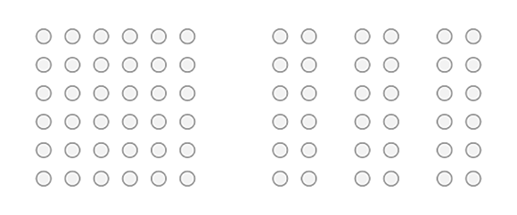

Frontend Design and Development
In this tab bar I explain the theory that was treated during the FDD lessons at the CHE.
Interaction Design
Week 1
Introduction
Before I start with the subject of interaction design, I briefly explain why this website was made and what the subject of FDD is.
For the Frontend Design and Development (FDD) course, we have been busy creating, developing and designing your own website from the first week of lessons, in which you describe the teaching material and the design process.
What is FDD?
FDD consists of Frontend Design and Development. Frontend Design is about the "front view" of a website. Basically what you see as a user when you visit a website or app. With design you give the frontend shape, color and appearance.
The word development indicates that your website or app is improved by testing and making adjustments to your frontend.
What is Interaction Design?
When we talk about Interaction Design, we are talking about a part of User Experience Design. User Experience Design characterizes the user experience in its entirety of a digital product, such as a website, application, web app, etc. Interaction Design focuses precisely on the part of the interaction between the user and the digital product. The product should be fun and interesting for the user. A good graphic design; good visual design, details and communication are important for a good user experience. If a design looks attractive, the user likes to stay on your website.
In short, a UX Designer researches and designs the best user experience and an IX Designer devises a concept for interaction between the user and the product.
As part of one of the learning tasks of the past few weeks, a test on Interaction Design had to be made. Click here to see my result of the test.
Usability
Usability is about how user-friendly a website or other digital product is. Also about how challenging it is for a visitor to click, scroll or swipe further. So with usability you ensure that the customer has an optimal user experience.
Accessibility
A design is only usable when it is accessible to the user. For example, designers of a website have to take into account the access to the website. When this is successful, it also enables people with disabilities, for example, to perceive what is on your website. People with a visual impairment can hardly read text on your website. A nice solution is to use screen reading software, so that they can hear words, and still receive the information given on the website.
Wireframing
A wireframe is a visual tool for developing a website or application. You can also see it as a construction drawing of the website. This construction drawing will contain the various components that will be present on the website.
Wireframes are used after the goals of the website are known, then the ideas can be worked out in wireframes. With wireframes you can get a clear picture for yourself whether the idea has been worked out well, but also whether the website meets the user-friendliness.
To make a wireframe, you can use pen and paper, but there are also a number of programs that can help you with this, such as Balsamiq or Adobe Design.
Empathize and Define
First, an Interaction Designer must know for which target group they are designing a product and what the purpose of the product should be. Therefore, research first takes place into the user of the product. The image below therefore starts with the Empathize phase, a large amount of information is included during this phase, which are important in the following phases of the project.
In the Define phase, the collected ideas and information are analyzed with the aim of how they can be used effectively.
Ideate and Prototype
Subsequently, during the Ideate phase, all information from the previous phases is used to generate ideas. Ideas that can be completely out of the box, or very logical. It is important to have enough ideas on paper so that you have a wide choice.
Test and Implement
The fifth and final phase is called Test. During this phase, the Designer tests the prototype created in phase four. It is checked whether the prototype in question solves the problem that was analyzed in phases one and two. If this is not the case, you can go back to previous phases until the problem is solved and the end product meets all requirements.
Wireframing and Interfaces
Week 2
Wireframes
A wireframe is a visual tool for developing an application. You can also see it as a construction drawing of the website. In this construction drawing the different parts will be present on the website. Wireframes are about organization and structure, style details are discussed later.
Wireframes are used until the goals of the website are known, then the ideas can be worked out in wireframes. With wireframes you can get a clear picture for yourself of the idea that has been worked out well, but also of the website and the user configuration. Another reason to create wireframes is to let others see your idea easily and quickly.
To create a wireframe you can use pen and paper, but there are also some programs that can be made like Balsamiq or Adobe Design.
Types of wireframes
Wireframes are usually divided into three categories: low-fidelity, mid-fidelity, and high-fidelity. The word fidelity indicates how much detail the design contains.
Low-fidely wireframes are often rough lines that are mainly focused on the layout. For low-fidely wireframes it is not necessary to work in a computer program because you can also work on paper for that. So with low-fidely wireframes you have to keep your design simple. Therefore, omit images, filler text and icons.
With mid-fidely wireframes, the focus should be on the scale and size of the elements in relation to the working window. It develops the sketches from a low-fidely wireframe into a more detailed form of the design. Style is at the very least. That's why you don't use color and fonts yet, so you don't get into discussions about the design with your project team or client, for example.
Finally, we have high-fidely wireframes. Wireframes like this are all about accuracy. The design begins to resemble your finished product. Each element must be in the right place. Every menu and button must be functional for the user. The functionality of a high-fidely wireframe is different from low- and mid-fidely wireframes. With high-fidely wireframes, designers actually use the design to have the client approve the final design.
7 steps to making a good wireframe
Start with words. What do you need to get to the end product?
1. Think about who you're making it for. In the case for this website for freshmen who may be interested in this study. Or maybe for yourself, to practice with these terms and practice with HTML and CSS.
2. Think about why you are making it and what the purpose of your product is. For example, you can think of; proof of your competences, gain experience, learn something or just to earn your credits.
3. Think about which (inter)actions are needed.
Remember:
- Navigate to subsequent pages on the website.
- Hyperlinks to other websites.
- Contact form
- Comment on the website
- Call and mail functions
- Movies
4. Create a site map. How do you go from one page to another?
5. What matters are important? Think, for example, of the wishes of the customer or the client.
6. Use a design, or an existing design that you can get ideas from.
7. Finally, it is important that you let yourself be inspired!
Usability Testing
Week 3
What do we mean by Usability Testing?
Using usability tests, the usability of, for example, websites, apps or a design can be tested. You have a test person individually perform various tasks on your digital product, testing the design of the website and finally asking for feedback from the user. It is an effective and instructive way of testing to improve the usability of your digital product.
Usability testing is important because people drop out of a website when they are faced with unnecessary barriers. If people don't feel involved with your website, they won't come back. That is why usability tests can be used to test whether your target group uses your website as you envision it.
How many users are needed for a successful Usability Test?

The question is regularly raised about how many people are needed for a successful usability test. In the graph on the right ( Nielsen Norman Groupi (2000) Why You Only Need to Test with 5 Users [Image]) you can read that five users have already discovered 80% of the errors. With a single test user you have already discovered almost a third of the errors. A second user will also bring up the errors discovered from the first test, but will also come back with new errors that the first user has not noticed. A third user will see many errors already seen in the first two users. Of course, the third user will see a small amount of new errors, but not nearly as many as the first and second user. As more users are involved in the Usability test, you will discover relatively fewer new errors, and you will hear the same errors over and over again. After the fifth user, it is a waste of time to see the same findings several times.
What should you do during the Usability Test?
1. Ask one question at a time.
2. Don't use leading questions. So DON'T you think it's too small? BUT What do you think of the size?
3. Observe and ensure interaction.
4. Be still
5. Provide a note-taker and a separate supervisor. So test taker, note-taker and the questioner.
6. The user is always right.
Three roles for the test
- User. This is the user and test person of your website.
- Moderator. This is who made the design. The moderator asks the questions and initiates the usability test.
- Observer. This is the note-taker who takes notes during the test of the feedback the user gives about the design.
Usually the user, moderator and observer are in one room. This makes it easier to record body language, gestures and facial expressions and include them in the final assessment. Another arrangement could be that the observer's room is a lot further away, because that creates less pressure for the user. In addition, the user and the moderator do not hear the observer.
Important during a Usability Test
First, create a test script. In this you are introducing the test and thank you that the user wants to participate in the test. You mention that you are testing the design, not the user. Then you outline the context situation. For example, you mention that this is a website for potential first-year students who are interested in the HBO-ICT training at the CHE. Finally, you mention that all feedback is welcome. It is useful to know that you put the user at ease with this information. For example, use a cup of coffee and get to know each other before you start the test.
During the test you assign different tasks to the user. For example, you can instruct the user to get an overview of what the subject Fronted Design and Development (FDD) entails.
Also give alternatives during the test (You call that an AB test. So you first give the first test person contact form A and then contact form B and the second test person the other way around). People often find the second alternative better.
Three more important tips for during the test:
1. Let your users experience and especially observe what the users do.
2. After their task, ask the users to tell about their experience.
3. Ask follow-up questions and deepen your knowledge.
Finally, the user shares the experiences of the website and you ask a number of closing questions and thank the user for his time and effort for his participation.
Return on Investment
Finally, some information about the concept of Return On Investment (ROI). This concept reflects the relationship between returns and investments. This is often expressed as a percentage. When a company has spent $2,000 on investments and earned $4,000 on it, that company has an ROI of 200%.
What do you get in return if you invest in something?
- Brand awareness, popularity and a good reputation mean more money for the company and therefore more turnover.
- Time. For example, users of a website want answers to questions as quickly as possible. For example, consider a contact form on your website. Very handy, but often the customer does not get an immediate answer. A chatbot on your website is a good alternative.
- Happy users. When users of a wesbite are satisfied, they will come back to your website more often in the future and this builds a regular customer base.
- To trust. If you have a good website that meets user expectations, it gives confidence.
Grafic design and Accessibility
Week 4
What is graphic design anyway?
Graphic design is the visual shaping of ideas in different media. With the aim of sharing something with people. This requires both artistic and technical skill. A good graphic design ensures usability, comprehensibility and emotion of your design.
With a graphic design, people must be able to understand your design. If an explanation from the designer is needed, then it is not a good design. It must be clear to the user how to operate the website.
When you start designing, you have to ask yourself how you want information to be conveyed to the user. You can fill the website with a lot of text, but then you have to take into account that most people will read at least 20-28% of the words on your page. A handy alternative could be a video, because 80% watch a video on the relevant page.
What is also not indispensable during the graphic design of your page is the consideration of what atmosphere your website should radiate, the readability of the website (remember that color contrast has to be right), which font will be used and how the website should radiate.
You can work out your graphic design in a number of digital programs. Examples include: Photoshop, Adobe XD, Figma, Axure, Sketch and InVisionapp.
Accessibility
Or think of how people take in information. Everyone with or without disabilities has access to certain facilities.
For people with ADHD or autism, it is useful to keep your website simple. It is important for people with a visual impairment that the website contains a screen reader. Or people who have a hearing impairment, then it is useful to use subtitles for videos on your website. People who have a physical disability and have to type text, a speech to text function can come in handy. So there are countless possibilities to make your website accessible to everyone, just how far do you go?
Many more people benefit from the subtitling function than that small group of people who are hard of hearing. For example, if you are in a noisy train compartment, people also like to use subtitles. So you will have to make a decision for yourself depending on your target group and which functions you find important for your website.
Gestalt principles
There are some simple design principles for your website that will help you create more interesting and engaging visual experiences. These design principles are called the Gestalt principles, because by properly applying them, users are (unconsciously) helped in achieving their goal.
I discuss three:
- Principle of proximity/proximity
In the image below you see a large group of balls on the left and the same amount of balls on the right, but divided into three smaller, equal groups. In navigation menus, for example, many topics are grouped so that the user can ignore all information that is superfluous. This is applied in website menus. When a user is looking for music and within the categories of the menu are grouped movies, games and music, then the user can ignore the first two columns and thus focus on the last column.
In short, make sure that elements that belong together in terms of content are also placed together.

DoubleWeb (2020). Principles for a better user experience on your website, proximity [Image]
- Principle of similarity/simularity
The image below shows elements that resemble each other as a whole. Almost every person will interpret this picture as horizontal rows with heavy spheres and white spheres. Few people will mix vertical rows of black and white dots with this.
So make sure that elements that are the same in content or function must also connect visually.

Interaction Design Foundation (2020). The Law of Similarity [Image]
- Principle of closure/closure
This principle shows that people tend to see incomplete or partially covered figures as complete. Although pieces have been omitted in the image below, you will still recognize a circle and a rectangle.
Many apps display notifications that partially overlap with the app's icon. So if there is limited space to display something, it is possible to overlap figures.

Wikipedia File (2008). Gestalt Closure [Afbeelding]
Introduction to HTML
Week 5
The video below briefly but clearly explains what HTML is.
Source: YouTube, Codecafé (2021).
The three languages at a glance:
HTML is for the document structure.
CSS is for the formatting.
JavaScript is for the dynamic functionality
CSS and Frameworks
Week 6
Box model
The box model, in which each html element is placed - has a margin (margin), a border (border) and a padding. The 'thickness' for all four sides of these three characteristics can be determined. Cascading Style Sheets (CSS) assumes that each element is contained in a rectangular area called the box.
From the inside out, the box consists of:
- The content of the element (content)
- The padding
- The border
- And finally the margin.

Jackie Ha (2019). What is the CSS Box Model? [Afbeelding]
Positioning
To properly position certain elements in your html page, you must use the correct positon tag. I discuss three important postion tags.
static: An element with position: static; is not positioned in any special way.
relative: The position relative behaves the same as static, unless you add some extra ratios (think top, right, bottom and left), because then the position will be adjusted from its original position.
fixed: A fixed element is positioned relative to the viewport, meaning that this element is always in the same place regardless of whether the page is scrolled.
Flexbox
In onderstaande video wordt de flexbox in CSS duidelijk en helder uitgelegd.
Source: YouTube, Fireship (2020).
What are CSS Frameworks?
CSS frameworks are tools used by UI developers to make their work easier. Instead of spending time starting with a blank document, developers have the option to quickly launch user interfaces and apply their own customizations.
How do you get Frameworks?
The internet is full of this. You can find all kinds on websites like;
- Getbootstrap.com for CSS and JS frameworks.
- Tailwindcss.com for CSS frameworks.
- Bulma.io for CSS frameworks.
- And milligram.io for CSS frameworks.
Measuring accessibility of your website
If you want to know whether the contrast on your website is sufficient for everyone to read and see, you can use accessibility tools. A handy tool is lighthouse. To reach lighthouse you need to do the following;
- Go to the website you want to test for accessibility.
- Press F12.
- Go to Lighthouse.
- Click accessibility only.
- Finally, choose your device; desktop or mobile.


{kind=link}